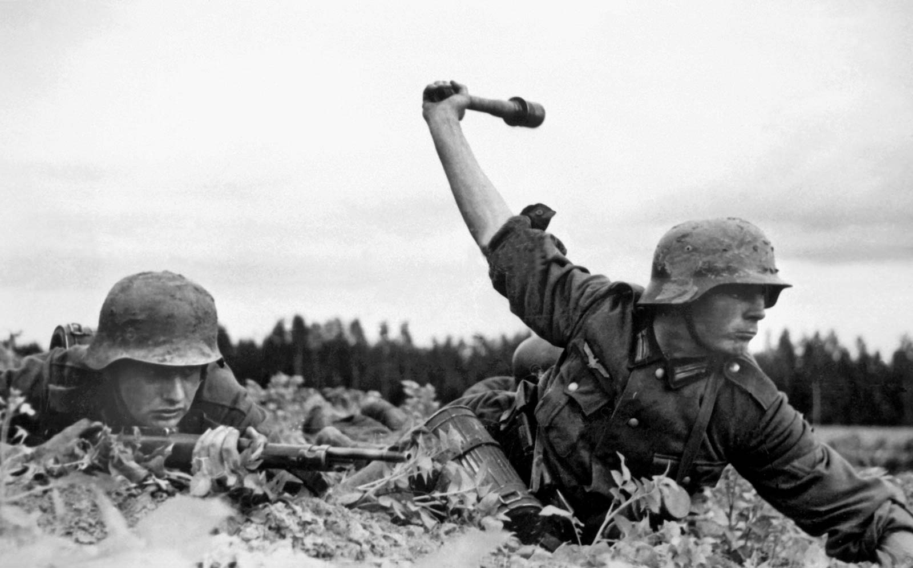

To see if there is a correlation between casualties and the results of a given battle.

Timeline of Events
The Operation Barbarossa Project is a group effort between Dylan More and Matt Nowakowski. The project focuses on the
events from June 22, 1941 to February 2, 1943.